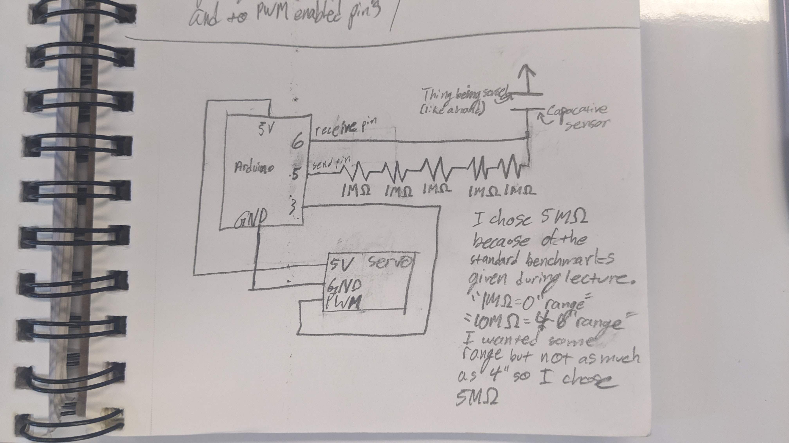
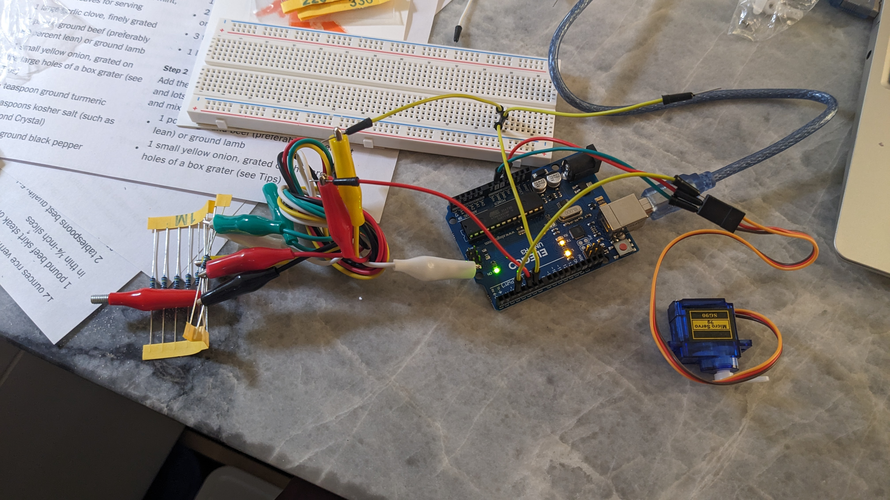
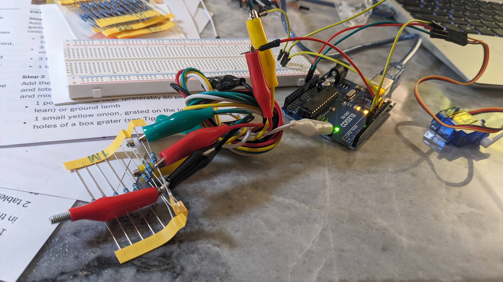
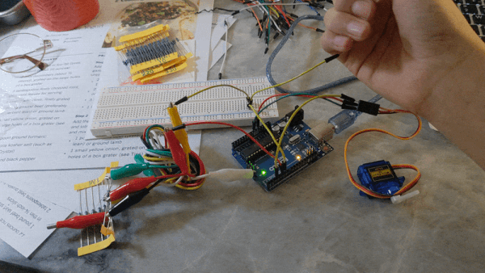
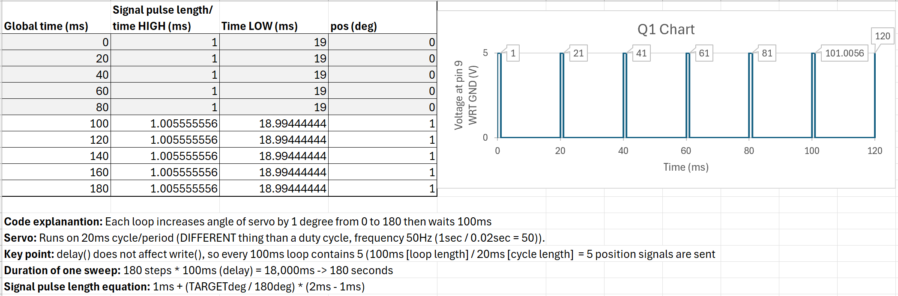

// Imports the capacitive sensor and servo libraries for use
// External source capacitive sensor library made by Paul Badger, Paul Stoffregen
#include <CapacitiveSensor.h>
// External source servo library made by Michael Margolis, Arduino
#include <Servo.h>
// Stores the capacitive sensor send and receive pins in variables so it's easier to change in the future if needed
const int capacSendPin = 5;
const int capacReceivePin = 6;
// Sets the min and max values for the capacitive sensor reading that I got by observing the serial monitor printing the values
const int capacSensorMin = 0;
const int capacSensorMax = 300;
// Sets up the send and receive pins for the capacitive sensor, first param is send, second is receive
CapacitiveSensor capacSensor = CapacitiveSensor(capacSendPin,capacReceivePin);
// create Servo object to control a servo
Servo myServo;
void setup() {
// Setup for print statements
Serial.begin(9600);
// Attaches the servo on pin 3 to the Servo object
myServo.attach(3);
}
void loop() {
// Reads the capacitive sensor value with 30 sample
long total1 = capacSensor.capacitiveSensor(30);
// Stores in the targetAngle variable the constrained and then mapped to 180 degree value of the capacitive sensor given the min and max constants set above
int targetAngle = map(constrain(total1, capacSensorMin, capacSensorMax), capacSensorMin, capacSensorMax, 0, 180);
// Prints the calculated target angle to the serial monitor
Serial.println(targetAngle);
// Sets the servo to the target angle
myServo.write(targetAngle);
// Waits for 100ms to make sure the servo can move to the given position before getting another command
delay(100);
}

void loop() {
for (pos = 0; pos <= 180; pos += 1) {
myservo.write(pos);
delay(100);
}
}

This sounds like data spikes which can be fixed using a median filter and/or range limiting. I will be writing pseudocode for a median filter for this question.
int WINDOW = 10;
int readings[WINDOW];
void loop() {
for (int i = 0; i < WINDOW; i++) {
readings[i] = analogRead(A0);
}
sorted = sort(readings);
filtered_val = sorted[WINDOW/2]; // USE THIS VALUE
}
This sounds like high frequency noise which can be fixed using a rolling average or low pass filtering. I will be writing pseudocode for a rolling average to smooth the signal for this question.
const int numForAvg = 10;
loop:
sensorReadingsArray[index] = rawSensorVal;
index++;
if (index > (numForAvg - 1)) {
avgdVal = 0;
for (int v : sensorReadingsArray) {
avgdVal += v;
}
index = 0;
avgdVal = avgdVal / numForAvg;
}